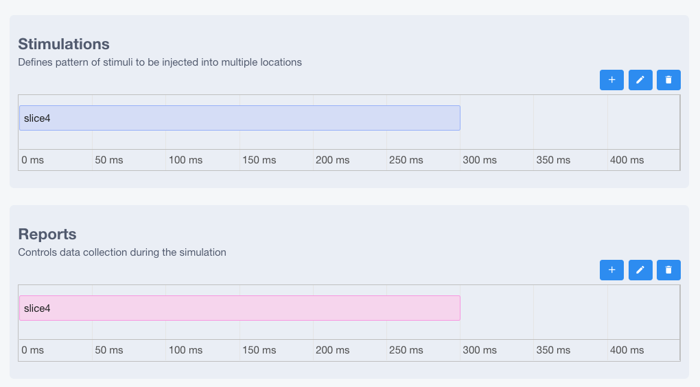
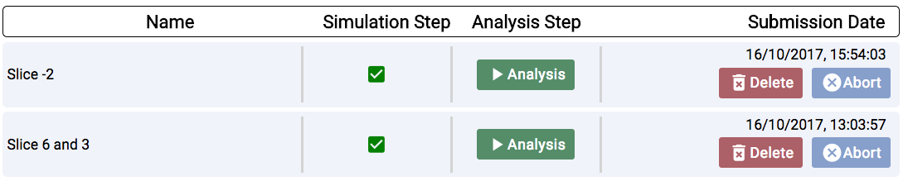
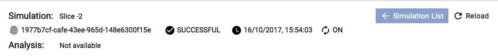
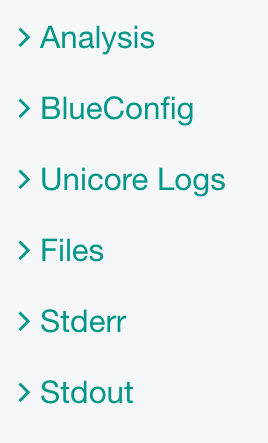

Documentation¶
Configure and Launch Simulations¶
This use case allows a user to configure and launch a simulation on HBP HPAC infrastructure using Unicore API.
1) Run Simulations¶

From the top you can configure:
Duration: Time length of stimulus duration, given in milliseconds(ms)Forward Skip: Time length in milliseconds (ms) of running the simulation without stimulus and without reporting. This is to get the neuronal cells past any initial transienceView Simulations: From here you can see all the history of simulations (explained in section 2)
From the middle you can configure:

addnew stimulus/report,editorremove(You can also double-click on the timeline to add or edit)
Slices Selectorallows to pick a slice of the hippocampus and it will add this to the stimulus / report
Stimulations- For creation or edition of the item a form will appear
- Target: Name of a target to receive the stimulation
- Pattern: Type of the stimulus [Poisson]
- Lambda: Configure the random distribution
- Delay: Time when the stimulus commences, given in milliseconds(ms)
- Duration: Time length of stimulus duration, given in milliseconds(ms)
- Weight: The strength of the created synapses
- Number of synapses: The number of synapses to create

- For creation or edition of the item a form will appear
Reports- For creation or edition of the item a form will appear
- Target: Defines the region from where the data will be reported. Note that cell targets versus compartment targets can influence report behavior
- Type: Compartment means that each compartment outputs separately in the report file. Synapse indicates that each synapse will have a separate entry in the report [compartment, synapse]
- ReportOn: The NEURON variable to access
- Unit: The unit of the NEURON variable
- StartTime: Time to start reporting(ms)
- EndTime: Time to stop reporting(ms)
- Dt: The frequency of reporting in milliseconds(ms)
- Format: Defines the report output format [Bin, ASCII, HDF5]
- Number of synapses: The number of synapses to create

- For creation or edition of the item a form will appear
From the bottom you can launch the simulation
- This will open a form to configure the parameters before executing the jobs on the supercomputer
Title: The title of the job
Computer: Which supercomputer will run the simulation.
Project: (optional) If you want to specify under which project the simulation should be run
Nodes: The amount of nodes that will be allocated and used for the simulation
Run Time: The maximum time before timeout (in seconds)
Preview Config: This will open a new tab with the complete configuration that is going to be sent (BlueConfig)

2) View Simulations¶

From the top you are able to:
Filterby Title, Status, SupercomputerCreate Simulation: this goes back to Configure and Launch simuation pageReload: to fetch the latest simulations and status
From the middle you are able to:

Check statusof Simulation and Analysis steps:- ready

- queue

- aborted

- failed

- ready
Run Analysisif no analysis was launched you can do it from the analysis stepThis will open a form to configure the parameters before executing the analysis on the supercomputer
Title: Title of the job
Origin: Supercomputer where the simulation output are located
Destination: Supercomputer that the output files from simulation will be copied to and start the analysis
Nodes: Number of nodes dedicated for the analysis job

Deletethe simulationAbortthe simulation
3) Simulation Details¶

From the top you are able to see:

SimulationandAnalysiswith the following information- Name
- ID
- Status
- Submission Date
- Auto Sync while the job is running reload the information
From the middle you are able to see:

- Analysis: Plots of the analysis will be shown here
- BlueConfig: The configuration that was sent to run the simulation
- Unicore Logs
- Stderr: Logs of the simulation
- Stdout: Output information of the simulation